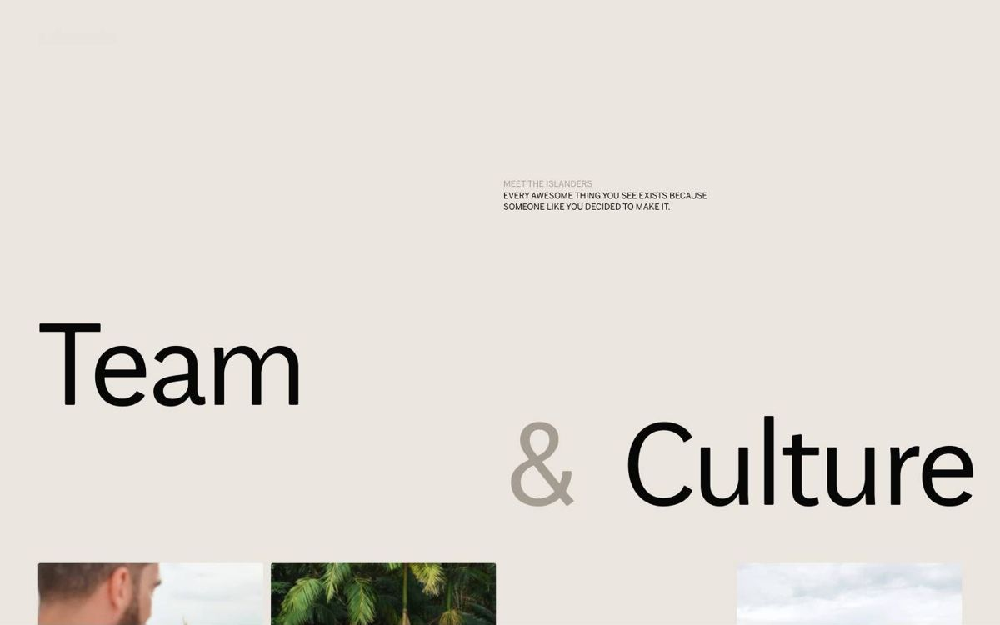
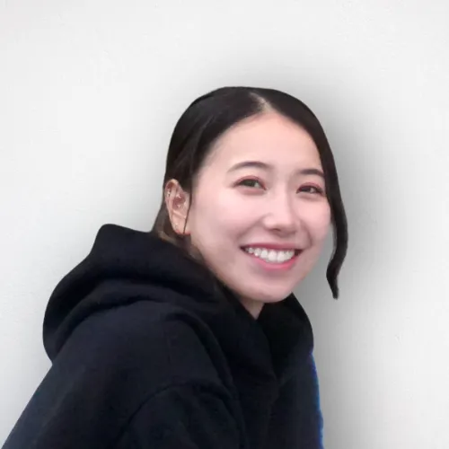
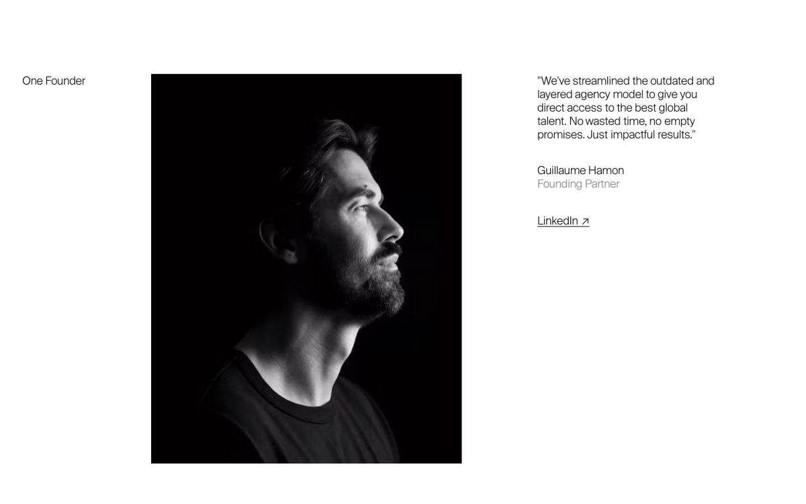

1生成りに小さな題と1本の線だけ。すぐ本文に入る参考：Pentagram About
 Pentagram About
Pentagram About大きな写真や飾りを置かず、左上に小さな題、すぐ下から本文。
→ 左に COMPANY、右に会社概要、下に細い線1本。いちばん静かな入り方。
2白地に COMPANY を大きく。上に小さなラベル参考：AREA 17 About「Culture」
 AREA 17 About
AREA 17 About白地の左に、小さなラベルと大きめの文字だけ。余白を広く。
→ COMPANY を大きく左寄せ。ラベルの頭に水色の小さな点を1つだけ。
3題の下に、本番の海の写真を角丸の帯で参考：14islands「Team & Culture」

14islands Careers明るい地に題、その下に写真の帯。
→ 本番の海の写真を色はそのまま、角丸の帯に。
生成してほしい写真（仮の写真を置いています）：明るい午前の自然光が入るオフィスの窓辺。白い壁、木の机の上にノート・ペン・コーヒーカップ、窓の外はぼんやりと街並み。人物と顔は写さない。自然な色（白・生成り・木・淡い灰色）、色かぶりなし、機械やSF演出なし、文字なし、横長3:2。（いまは本番の海の写真のまま）
1中央に明朝の一文と短い本文だけ参考：Collins「Rewrite your worth.」
 Collins
Collins明るい地の真ん中に、セリフ体の一文だけを置き、周りを大きく空ける。
→ 見出しを明朝で中央に、その下に本文を細く。飾りなし。
OUR MISSION
世界の『π』を最大化
個々の利益を追いかけるとチームのパイ（利益）は最大化せず、結果的に個人のパイも減ってしまい、何よりチームで働く楽しさを逸してしまう。ビジョンを持った個人同士が国や会社の垣根を越えて協働してパイを最大化することにより、楽しみながら世界の笑顔（π）の総量を最大化するチームを目指します。
2白地に、左に見出し・右に本文の2列参考：AREA 17 About「Culture」
AREA 17 About 白地に小さなラベルと、落ち着いた大きさの文章。
→ 見出しは3行に分けて左、本文は少し大きめにして右。
OUR MISSION
世界の
『π』
を最大化
個々の利益を追いかけるとチームのパイ（利益）は最大化せず、結果的に個人のパイも減ってしまい、何よりチームで働く楽しさを逸してしまう。ビジョンを持った個人同士が国や会社の垣根を越えて協働してパイを最大化することにより、楽しみながら世界の笑顔（π）の総量を最大化するチームを目指します。
3本番のチーム写真（笑顔）を左、文を右に参考：Instrument About「How we work」
 Instrument About「How we work」
Instrument About「How we work」明るい地に、仕事の様子の写真と短い文を左右に。
→ 「笑顔の総量」に合わせて、本番の採用ページの『足湯を囲んで笑う4人』を色そのままで。

OUR MISSION
世界の『π』を最大化
個々の利益を追いかけるとチームのパイ（利益）は最大化せず、結果的に個人のパイも減ってしまい、何よりチームで働く楽しさを逸してしまう。ビジョンを持った個人同士が国や会社の垣根を越えて協働してパイを最大化することにより、楽しみながら世界の笑顔（π）の総量を最大化するチームを目指します。
1細い線で区切った3列の格子参考：Hello Monday「Code of Honor」
 Hello Monday About「Code of Honor」
Hello Monday About「Code of Honor」明るい地に、細い線で区切った格子へ短い指針を並べる。
→ 5つを3列に。番号・英語・日本語の3段。
01FUN (PLAY)
世界で1番楽しそうに働くチームを目指す
02Free
各自の責任感の下、場所や時間に捉われず自由に裁量を持って働く
04Open
チーム内では本音で向き合い、人格は否定しない
05Optimization
全体最適視点で判断する
2白地に、左に見出し・右に5行の表参考：Collins About「Programs」
 Collins About「Programs」
Collins About「Programs」細い線の行に、名前と短い説明を左右に並べる。
→ 英語を左、日本語を右の5行。乗せた行の英語だけ水色に。
FUN (PLAY)
世界で1番楽しそうに働くチームを目指す
Free
各自の責任感の下、場所や時間に捉われず自由に裁量を持って働く
Open
チーム内では本音で向き合い、人格は否定しない
3中央に1つずつ、明朝の英語と日本語の一文参考：Collins「Rewrite your worth.」
Collins 中央に一文だけを置き、余白で読ませる。
→ 5つを中央に縦に積む。英語は明朝。
VALUES
サムライスタイルの5つの行動指針
FUN (PLAY)
世界で1番楽しそうに働くチームを目指す
Free
各自の責任感の下、場所や時間に捉われず自由に裁量を持って働く
Open
チーム内では本音で向き合い、人格は否定しない
1同じ寸法の顔写真を4列に、名前・役職・紹介を下に参考：Pentagram About のパートナー一覧
 Pentagram About
Pentagram About同じ光・同じ寸法の顔写真を格子に並べ、名前を小さく。
→ 4人を同じ寸法で。上は左に見出し、右にリード文。
MEMBERメンバー
私たちのチームは、多様な世代やバックグラウンドを持つメンバーで構成されており、それぞれが自分の得意分野を生かして、常にお客様のニーズに応える最適なソリューションを提供することに尽力しています。少数精鋭のため、お客様と密接な関係を築くことを重視しており、信頼に基づく長期的なパートナーシップの構築を目指しています。お客様の世界進出への挑戦をサポートし、成功への道を共に歩んでいけることを願っています。

橋本 圭司
代表取締役
大手通信会社の営業、事業企画、およびWebコンサル会社での経験を生かし、様々な業種・規模の企業でBizDev・マーケティングのコンサルとして事業を推進。

林 壮
プロジェクトマネージャー
東京生まれ、イギリス・シンガポール育ち。
映像ディレクターの経験を持ち、現在は弊社のオフショア開発事業と動画制作事業に加え、採用担当も務める。

Satrio Buwono
インドネシア事業開発
インドネシア生まれ、グラズゴー大学卒業
SaaSを専門に構築を行い、複数のITベンチャーを立ち上げ。オフショア開発事業のエンジニア統括を担う。

Lura Naito
人事・マーケティング担当
愛知生まれ、南米・東南アジア各国を放浪。
サムライスタイルでは人事全般・マーケティングを担当。ぶれない明るさが持ち味。
2白地に1人1行。丸い顔写真・名前・紹介文参考：AREA 17 About「Leadership」
 AREA 17 About「Leadership」
AREA 17 About「Leadership」白地に、明るい顔写真と名前・肩書きを整然と並べる。
→ 4人なので、1人1行の名簿に。読みやすさを優先。
MEMBERメンバー
私たちのチームは、多様な世代やバックグラウンドを持つメンバーで構成されており、それぞれが自分の得意分野を生かして、常にお客様のニーズに応える最適なソリューションを提供することに尽力しています。少数精鋭のため、お客様と密接な関係を築くことを重視しており、信頼に基づく長期的なパートナーシップの構築を目指しています。お客様の世界進出への挑戦をサポートし、成功への道を共に歩んでいけることを願っています。
大手通信会社の営業、事業企画、およびWebコンサル会社での経験を生かし、様々な業種・規模の企業でBizDev・マーケティングのコンサルとして事業を推進。
東京生まれ、イギリス・シンガポール育ち。
映像ディレクターの経験を持ち、現在は弊社のオフショア開発事業と動画制作事業に加え、採用担当も務める。
インドネシア生まれ、グラズゴー大学卒業
SaaSを専門に構築を行い、複数のITベンチャーを立ち上げ。オフショア開発事業のエンジニア統括を担う。
愛知生まれ、南米・東南アジア各国を放浪。
サムライスタイルでは人事全般・マーケティングを担当。ぶれない明るさが持ち味。
3代表を大きく1人、残り3人を下に参考：Rejouice About「One Founder」

Rejouice About「One Founder」創業者1人を大きな写真で、その横に短い言葉。下にパートナーを小さく。
→ 代表を大きく、他の3人は3列。
MEMBERメンバー
私たちのチームは、多様な世代やバックグラウンドを持つメンバーで構成されており、それぞれが自分の得意分野を生かして、常にお客様のニーズに応える最適なソリューションを提供することに尽力しています。少数精鋭のため、お客様と密接な関係を築くことを重視しており、信頼に基づく長期的なパートナーシップの構築を目指しています。お客様の世界進出への挑戦をサポートし、成功への道を共に歩んでいけることを願っています。
代表取締役
橋本 圭司
大手通信会社の営業、事業企画、およびWebコンサル会社での経験を生かし、様々な業種・規模の企業でBizDev・マーケティングのコンサルとして事業を推進。
プロジェクトマネージャー
林 壮
東京生まれ、イギリス・シンガポール育ち。
映像ディレクターの経験を持ち、現在は弊社のオフショア開発事業と動画制作事業に加え、採用担当も務める。
インドネシア事業開発
Satrio Buwono
インドネシア生まれ、グラズゴー大学卒業
SaaSを専門に構築を行い、複数のITベンチャーを立ち上げ。オフショア開発事業のエンジニア統括を担う。
人事・マーケティング担当
Lura Naito
愛知生まれ、南米・東南アジア各国を放浪。
サムライスタイルでは人事全般・マーケティングを担当。ぶれない明るさが持ち味。
1左に見出しと注記、右に罫線の表参考：Pentagram About（左に題・右に本文）
Pentagram About 左に小さな題、右に本文の2列。
→ 右は細い罫線の表。注記は左の見出しの下に小さく。写真なし。
ABOUT会社概要
当社は、生成AIを活用したサービスの提供にあたり、関連法令への適切な準拠を重視しており、顧問弁護士の助言を受けながら事業運営を行っています。
- 名称
- サムライスタイル株式会社
(Samurai Style Co., Ltd.) - 住所
- 〒150-0043
東京都渋谷区道玄坂1-10-8 渋谷道玄坂東急ビル2F - 電話番号
- 090-5589-8442
- 設立
- 2024年6月
- 資本金
- 500万円
- 事業内容
- 海外進出支援事業、マーケティングコンサルタント事業、映像制作およびWEB制作/運用事業
- 顧問弁護士
- 大谷龍生弁護士（日比谷見附法律事務所）
2白地に、設立と資本金だけ大きな数字。残りは表参考：Instrument About「20 Years / 350+ Employees」
 Instrument About
Instrument About細く大きな数字で会社の輪郭を見せる。
→ 本番にある「2024年6月」「500万円」だけを大きく、残りは表。
ABOUT
会社概要
- 名称
- サムライスタイル株式会社
(Samurai Style Co., Ltd.) - 住所
- 〒150-0043
東京都渋谷区道玄坂1-10-8 渋谷道玄坂東急ビル2F - 電話番号
- 090-5589-8442
- 事業内容
- 海外進出支援事業、マーケティングコンサルタント事業、映像制作およびWEB制作/運用事業
- 顧問弁護士
- 大谷龍生弁護士（日比谷見附法律事務所）
当社は、生成AIを活用したサービスの提供にあたり、関連法令への適切な準拠を重視しており、顧問弁護士の助言を受けながら事業運営を行っています。
3本番のビルの写真を左、表を右に参考：Instrument About「How we work」
Instrument About 明るい地に写真と文を左右に。
→ 本番どおりビルの写真を添える（色はそのまま）。
ABOUT会社概要
- 名称
- サムライスタイル株式会社
(Samurai Style Co., Ltd.) - 住所
- 〒150-0043
東京都渋谷区道玄坂1-10-8 渋谷道玄坂東急ビル2F - 電話番号
- 090-5589-8442
- 設立
- 2024年6月
- 資本金
- 500万円
- 事業内容
- 海外進出支援事業、マーケティングコンサルタント事業、映像制作およびWEB制作/運用事業
- 顧問弁護士
- 大谷龍生弁護士（日比谷見附法律事務所）
当社は、生成AIを活用したサービスの提供にあたり、関連法令への適切な準拠を重視しており、顧問弁護士の助言を受けながら事業運営を行っています。
BREADCRUMBパンくず（全案共通・本番でフッターの直前にある）
本番の更新で増えた要素。どの案でもフッターの上にこの形で置きます。